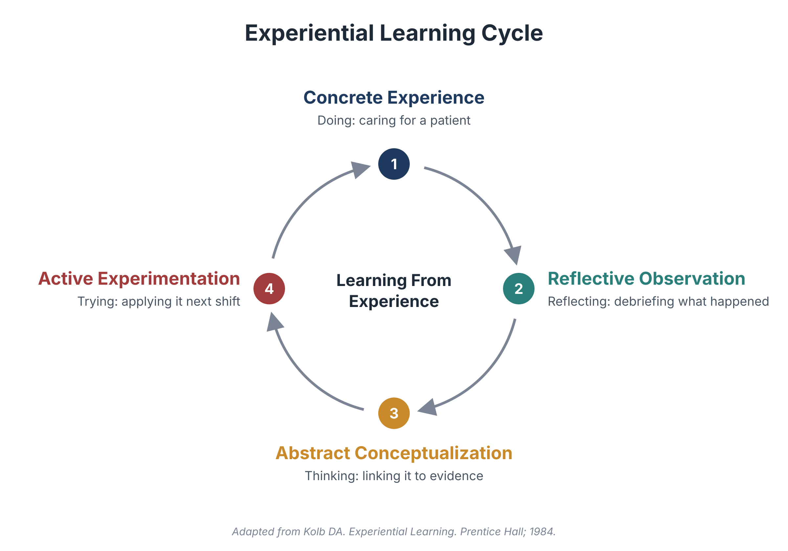
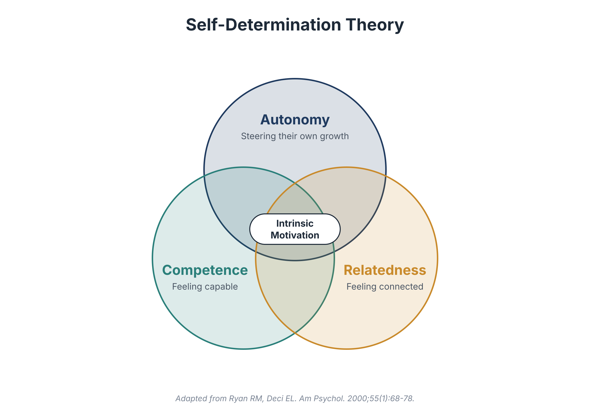
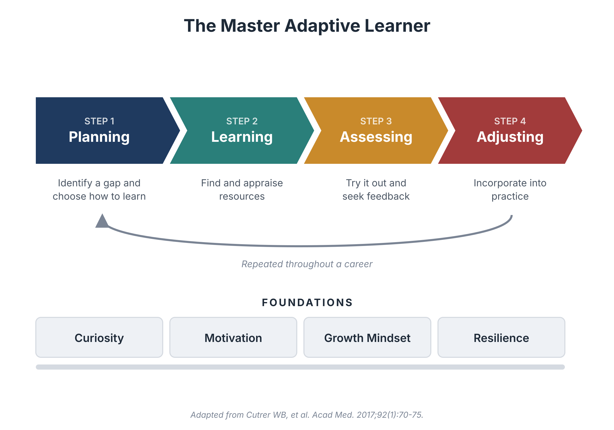

Teaching Philosophy
I aim to educate the next generation of world changers in medicine by leading as a servant, fostering a growth mindset, and developing master adaptive learners.
My teaching is built on a commitment to innovation and on core principles of adult learning, guided by the belief that my role is less about delivering knowledge and more about helping learners become people who can keep learning long after they leave me.
1Education Must Keep Pace With Medicine
Medicine is changing faster than any curriculum can be rewritten, and artificial intelligence is speeding up that change. Today's learners will practice alongside tools that didn't exist when they started training, and they deserve an education that prepares them for that future, not the one their teachers trained for.
As co-director of the artificial intelligence curriculum at the University of Cincinnati College of Medicine, I worked with faculty and students to help learners use these tools thoughtfully: understanding what they do well, where they fail, and how to keep clinical judgment and the patient at the center. I approach innovation with curiosity and humility. A new tool is worth adopting when it helps learners think better, not when it lets them think less. In the end, innovation in education is less about technology than about modeling the adaptability we hope our learners will carry through their careers.
2Learners Grow When Someone Believes in Them
Bandura described self-efficacy as a learner's belief that they can succeed. That belief is shaped by the people around them, through encouragement, honest feedback, and someone who sees their potential before they do. This is the heart of coaching, and it is why I founded the Boston Combined Residency Program Coaching Program.
Coaches observed residents directly, offered specific feedback, and helped coachees set and work toward their own goals. In the emergency department, I bring the same approach: I name what a learner did well, frame gaps as next steps, and give graded responsibility so each success builds the confidence for the next challenge.
3Experience Is the Richest Resource
Every learner brings experience to the bedside, and the emergency department adds new experience every shift. Following Kolb's experiential learning cycle, I help learners move from doing to reflecting, from reflecting to understanding, and from understanding to trying again.
A brief debrief after a resuscitation or a difficult conversation with a family often teaches more than any lecture.

4Learning Must Be Relevant
Adults learn what they need to use. I tie teaching to the patient in front of us and to the kind of physician each learner wants to become. Competency-based medical education gives this a structure: when learners know the professional activities they will be trusted to perform, every teaching moment points toward real practice and, eventually, readiness for unsupervised practice.
5Motivation Comes From Within
Self-determination theory holds that motivation grows when learners feel autonomy, competence, and connection. I aim to create learning environments where all three are present, so that learners keep learning because they want to, not because they are being graded.

Growth Mindset and Master Adaptive Learning
Underneath these principles is a growth mindset: the belief that ability grows through effort, feedback, and even failure. I treat mistakes as data, not verdicts, and I try to model that by naming my own learning in front of trainees.
My goal is to develop master adaptive learners, physicians who can plan, learn, assess, and adjust on their own throughout a career in which medicine will keep changing.

Servant Leadership
Finally, I teach as a servant leader. Greenleaf's measure of a servant leader is whether those served grow healthier, wiser, and more autonomous. That is the measure I hold myself to as a teacher. Every learner I teach will care for children I will never meet, and helping them grow is one of the most meaningful ways I can serve those children.
References
- Bandura A. Self-efficacy: toward a unifying theory of behavioral change. Psychol Rev. 1977;84(2):191-215.
- Cutrer WB, Miller B, Pusic MV, et al. Fostering the development of master adaptive learners: a conceptual model to guide skill acquisition in medical education. Acad Med. 2017;92(1):70-75.
- Deiorio NM, Carney PA, Kahl LE, Bonura EM, Juve AM. Coaching: a new model for academic and career achievement. Med Educ Online. 2016;21:33480.
- Dweck CS. Mindset: The New Psychology of Success. Random House; 2006.
- Greenleaf RK. Servant Leadership: A Journey into the Nature of Legitimate Power and Greatness. Paulist Press; 1977.
- Knowles MS, Holton EF, Swanson RA. The Adult Learner. 8th ed. Routledge; 2015.
- Kolb DA. Experiential Learning: Experience as the Source of Learning and Development. Prentice Hall; 1984.
- Ryan RM, Deci EL. Self-determination theory and the facilitation of intrinsic motivation, social development, and well-being. Am Psychol. 2000;55(1):68-78.
- ten Cate O. Entrustability of professional activities and competency-based training. Med Educ. 2005;39(12):1176-1177.